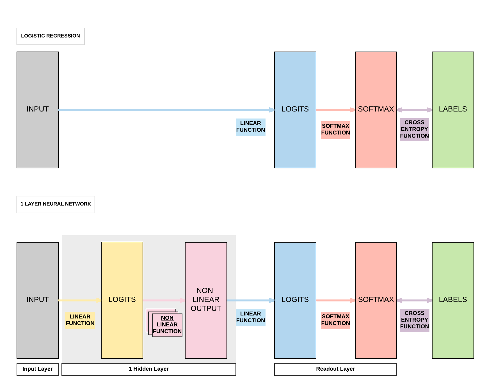
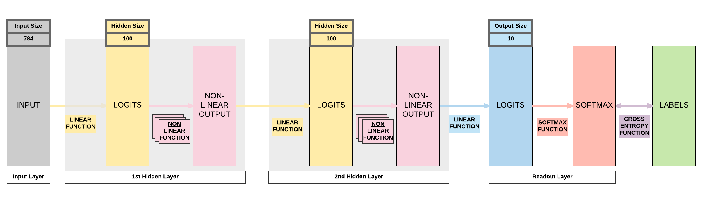

Feedforward Neural Network with PyTorch¶
About Feedforward Neural Network¶
Logistic Regression Transition to Neural Networks¶
Logistic Regression Review¶

Define logistic regression model
Import our relevant torch modules.
import torch import torch.nn as nn
Define our model class.
class LogisticRegressionModel(nn.Module): def __init__(self, input_dim, output_dim): super(LogisticRegressionModel, self).__init__() self.linear = nn.Linear(input_dim, output_dim) def forward(self, x): out = self.linear(x) return out
Instantiate the logistic regression model.
input_dim = 28*28 output_dim = 10 model = LogisticRegressionModel(input_dim, output_dim)
When we inspect the model, we would have an input size of 784 (derived from 28 x 28) and output size of 10 (which is the number of classes we are classifying from 0 to 9).
print(model)
LogisticRegressionModel( (linear): Linear(in_features=784, out_features=10, bias=True) )
Logistic Regression Problems¶
- Can represent linear functions well
- y = 2x + 3
- y = x_1 + x_2
- y = x_1 + 3x_2 + 4x_3
- Cannot represent non-linear functions
- y = 4x_1 + 2x_2^2 +3x_3^3
- y = x_1x_2
Introducing a Non-linear Function¶

Non-linear Function In-Depth¶
- Function: takes a number & perform mathematical operation
- Common Types of Non-linearity
- ReLUs (Rectified Linear Units)
- Sigmoid
- Tanh
Sigmoid (Logistic)¶
- \sigma(x) = \frac{1}{1 + e^{-x}}
- Input number \rightarrow [0, 1]
- Large negative number \rightarrow 0
- Large positive number \rightarrow 1
- Cons:
- Activation saturates at 0 or 1 with gradients \approx 0
- No signal to update weights \rightarrow cannot learn
- Solution: Have to carefully initialize weights to prevent this
- Outputs not centered around 0
- If output always positive \rightarrow gradients always positive or negative \rightarrow bad for gradient updates
- Activation saturates at 0 or 1 with gradients \approx 0
Tanh¶
- \tanh(x) = 2 \sigma(2x) -1
- A scaled sigmoid function
- Input number \rightarrow [-1, 1]
- Cons:
- Activation saturates at 0 or 1 with gradients \approx 0
- No signal to update weights \rightarrow cannot learn
- Solution: Have to carefully initialize weights to prevent this
- Activation saturates at 0 or 1 with gradients \approx 0
ReLUs¶
- f(x) = \max(0, x)
- Pros:
- Accelerates convergence \rightarrow train faster
- Less computationally expensive operation compared to Sigmoid/Tanh exponentials
- Cons:
- Many ReLU units "die" \rightarrow gradients = 0 forever
- Solution: careful learning rate choice
- Many ReLU units "die" \rightarrow gradients = 0 forever
Building a Feedforward Neural Network with PyTorch¶
Model A: 1 Hidden Layer Feedforward Neural Network (Sigmoid Activation)¶

Steps¶
- Step 1: Load Dataset
- Step 2: Make Dataset Iterable
- Step 3: Create Model Class
- Step 4: Instantiate Model Class
- Step 5: Instantiate Loss Class
- Step 6: Instantiate Optimizer Class
- Step 7: Train Model
Step 1: Loading MNIST Train Dataset¶
Images from 1 to 9
Similar to what we did in logistic regression, we will be using the same MNIST dataset where we load our training and testing datasets.
import torch import torch.nn as nn import torchvision.transforms as transforms import torchvision.datasets as dsets
train_dataset = dsets.MNIST(root='./data', train=True, transform=transforms.ToTensor(), download=True) test_dataset = dsets.MNIST(root='./data', train=False, transform=transforms.ToTensor())
Step 2: Make Dataset Iterable¶
Batch sizes and iterations
Because we have 60000 training samples (images), we need to split them up to small groups (batches) and pass these batches of samples to our feedforward neural network subsesquently.
There are a few reasons why we split them into batches. Passing your whole dataset as a single batch would:
(1) require a lot of RAM/VRAM on your CPU/GPU and this might result in Out-of-Memory (OOM) errors.
(2) cause unstable training if you just use all the errors accumulated in 60,000 images to update the model rather than gradually update the model. In layman terms, imagine you accumulated errors for a student taking an exam with 60,000 questions and punish the student all at the same time. It is much harder for the student to learn compared to letting the student learn it made mistakes and did well in smaller batches of questions like mini-tests!
If we have 60,000 images and we want a batch size of 100, then we would have 600 iterations where each iteration involves passing 600 images to the model and getting their respective predictions.
60000 / 100
600.0
Epochs
An epoch means that you have successfully passed the whole training set, 60,000 images, to the model. Continuing our example above, an epoch consists of 600 iterations.
If we want to go through the whole dataset 5 times (5 epochs) for the model to learn, then we need 3000 iterations (600 x 5).
600 * 5
3000.0
Bringing batch size, iterations and epochs together
As we have gone through above, we want to have 5 epochs, where each epoch would have 600 iterations and each iteration has a batch size of 100.
Because we want 5 epochs, we need a total of 3000 iterations.
batch_size = 100 n_iters = 3000 num_epochs = n_iters / (len(train_dataset) / batch_size) num_epochs = int(num_epochs) train_loader = torch.utils.data.DataLoader(dataset=train_dataset, batch_size=batch_size, shuffle=True) test_loader = torch.utils.data.DataLoader(dataset=test_dataset, batch_size=batch_size, shuffle=False)
Step 3: Create Model Class¶
Creating our feedforward neural network
Compared to logistic regression with only a single linear layer, we know for an FNN we need an additional linear layer and non-linear layer.
This translates to just 4 more lines of code!
class FeedforwardNeuralNetModel(nn.Module): def __init__(self, input_dim, hidden_dim, output_dim): super(FeedforwardNeuralNetModel, self).__init__() # Linear function self.fc1 = nn.Linear(input_dim, hidden_dim) # Non-linearity self.sigmoid = nn.Sigmoid() # Linear function (readout) self.fc2 = nn.Linear(hidden_dim, output_dim) def forward(self, x): # Linear function # LINEAR out = self.fc1(x) # Non-linearity # NON-LINEAR out = self.sigmoid(out) # Linear function (readout) # LINEAR out = self.fc2(out) return out
Step 4: Instantiate Model Class¶
- Input dimension: 784
- Size of image
- 28 \times 28 = 784
- Output dimension: 10
- 0, 1, 2, 3, 4, 5, 6, 7, 8, 9
- Hidden dimension: 100
- Can be any number
- Similar term
- Number of neurons
- Number of non-linear activation functions
Instantiating our model class
Our input size is determined by the size of the image (numbers ranging from 0 to 9) which has a width of 28 pixels and a height of 28 pixels. Hence the size of our input is 784 (28 x 28).
Our output size is what we are trying to predict. When we pass an image to our model, it will try to predict if it's 0, 1, 2, 3, 4, 5, 6, 7, 8, or 9. That is a total of 10 classes, hence we have an output size of 10.
Now the tricky part is in determining our hidden layer size, that is the size of our first linear layer prior to the non-linear layer. This can be any number, a larger number implies a bigger model with more parameters. Intuitively we think a bigger model equates to a better model, but a bigger model requires more training samples to learn and converge to a good model (also called curse of dimensionality). Hence, it is wise to pick the model size for the problem at hand. Because it is a simple problem of recognizing digits, we typically would not need a big model to achieve state-of-the-art results.
On the flipside, too small of a hidden size would mean there would be insufficient model capacity to predict competently. In layman terms, too small of a capacity implies a smaller brain capacity so no matter how many training samples you give it, it has a maximum capacity in terms of its predictive power.
input_dim = 28*28 hidden_dim = 100 output_dim = 10 model = FeedforwardNeuralNetModel(input_dim, hidden_dim, output_dim)
Step 5: Instantiate Loss Class¶
- Feedforward Neural Network: Cross Entropy Loss
- Logistic Regression: Cross Entropy Loss
- Linear Regression: MSE
Loss class
This is exactly the same as what we did in logistic regression. Because we are going through a classification problem, cross entropy function is required to compute the loss between our softmax outputs and our binary labels.
criterion = nn.CrossEntropyLoss()
Step 6: Instantiate Optimizer Class¶
- Simplified equation
- \theta = \theta - \eta \cdot \nabla_\theta
- \theta: parameters (our tensors with gradient accumulation capabilities)
- \eta: learning rate (how fast we want to learn)
- \nabla_\theta: parameters' gradients
- \theta = \theta - \eta \cdot \nabla_\theta
- Even simplier equation
parameters = parameters - learning_rate * parameters_gradients- At every iteration, we update our model's parameters
Optimizer class
Learning rate determines how fast the algorithm learns. Too small and the algorithm learns too slowly, too large and the algorithm learns too fast resulting in instabilities.
Intuitively, we would think a larger learning rate would be better because we learn faster. But that's not true. Imagine we pass 10 images to a human to learn how to recognize whether the image is a hot dog or not, and it got half right and half wrong.
A well defined learning rate (neither too small or large) is equivalent to rewarding the human with a sweet for getting the first half right, and punishing the other half the human got wrong with a smack on the palm.
A large learning rate would be equivalent to feeding a thousand sweets to the human and smacking a thousand times on the human's palm. This would lead in a very unstable learning environment. Similarly, we will observe that the algorithm's convergence path will be extremely unstable if you use a large learning rate without reducing it subsequently.
We are using an optimization algorithm called Stochastic Gradient Descent (SGD) which is essentially what we covered above on calculating the parameters' gradients multiplied by the learning rate then using it to update our parameters gradually. There's an in-depth analysis of various optimization algorithms on top of SGD in another section.
learning_rate = 0.1 optimizer = torch.optim.SGD(model.parameters(), lr=learning_rate)
Parameters In-Depth¶
Linear layers' parameters
In a simple linear layer it's Y = AX + B, and our parameters are A and bias B.
Hence, each linear layer would have 2 groups of parameters A and B. It is critical to take note that our non-linear layers have no parameters to update. They are merely mathematical functions performed on Y, the output of our linear layers.
This would return a Python generator object, so you need to call list on the generator object to access anything meaningful.
print(model.parameters())
Here we call list on the generator object and getting the length of the list. This would return 4 because we've 2 linear layers, and each layer has 2 groups of parameters A and b.
print(len(list(model.parameters())))
Our first linear layer parameters, A_1, would be of size 100 x 784. This is because we've an input size of 784 (28 x 28) and a hidden size of 100.
# FC 1 Parameters print(list(model.parameters())[0].size())
Our first linear layer bias parameters, B_1, would be of size 100 which is our hidden size.
# FC 1 Bias Parameters print(list(model.parameters())[1].size())
Our second linear layer is our readout layer, where the parameters A_2 would be of size 10 x 100. This is because our output size is 10 and hidden size is 100.
# FC 2 Parameters print(list(model.parameters())[2].size())
Likewise our readout layer's bias B_1 would just be 10, the size of our output.
# FC 2 Bias Parameters print(list(model.parameters())[3].size())
The diagram below shows the interaction amongst our input X and our linear layers' parameters A_1, B_1, A_2, and B_2 to reach to the final size of 10 x 1.
If you're still unfamiliar with matrix product, go ahead and review the previous quick lesson where we covered it in logistic regression.
<generator object Module.parameters at 0x7f1d530fa678> 4 torch.Size([100, 784]) torch.Size([100]) torch.Size([10, 100]) torch.Size([10])

Step 7: Train Model¶
- Process
- Convert inputs to tensors with gradient accumulation capabilities
- Clear gradient buffers
- Get output given inputs
- Get loss
- Get gradients w.r.t. parameters
- Update parameters using gradients
parameters = parameters - learning_rate * parameters_gradients
- REPEAT
7-step training process
iter = 0 for epoch in range(num_epochs): for i, (images, labels) in enumerate(train_loader): # Load images with gradient accumulation capabilities images = images.view(-1, 28*28).requires_grad_() # Clear gradients w.r.t. parameters optimizer.zero_grad() # Forward pass to get output/logits outputs = model(images) # Calculate Loss: softmax --> cross entropy loss loss = criterion(outputs, labels) # Getting gradients w.r.t. parameters loss.backward() # Updating parameters optimizer.step() iter += 1 if iter % 500 == 0: # Calculate Accuracy correct = 0 total = 0 # Iterate through test dataset for images, labels in test_loader: # Load images with gradient accumulation capabilities images = images.view(-1, 28*28).requires_grad_() # Forward pass only to get logits/output outputs = model(images) # Get predictions from the maximum value _, predicted = torch.max(outputs.data, 1) # Total number of labels total += labels.size(0) # Total correct predictions correct += (predicted == labels).sum() accuracy = 100 * correct / total # Print Loss print('Iteration: {}. Loss: {}. Accuracy: {}'.format(iter, loss.item(), accuracy))
Iteration: 500. Loss: 0.6457265615463257. Accuracy: 85 Iteration: 1000. Loss: 0.39627206325531006. Accuracy: 89 Iteration: 1500. Loss: 0.2831554412841797. Accuracy: 90 Iteration: 2000. Loss: 0.4409525394439697. Accuracy: 91 Iteration: 2500. Loss: 0.2397005707025528. Accuracy: 91 Iteration: 3000. Loss: 0.3160165846347809. Accuracy: 91
Model B: 1 Hidden Layer Feedforward Neural Network (Tanh Activation)¶
Steps¶
- Step 1: Load Dataset
- Step 2: Make Dataset Iterable
- Step 3: Create Model Class
- Step 4: Instantiate Model Class
- Step 5: Instantiate Loss Class
- Step 6: Instantiate Optimizer Class
- Step 7: Train Model
1-layer FNN with Tanh Activation
The only difference here compared to previously is that we are using Tanh activation instead of Sigmoid activation. This affects step 3.
import torch import torch.nn as nn import torchvision.transforms as transforms import torchvision.datasets as dsets ''' STEP 1: LOADING DATASET ''' train_dataset = dsets.MNIST(root='./data', train=True, transform=transforms.ToTensor(), download=True) test_dataset = dsets.MNIST(root='./data', train=False, transform=transforms.ToTensor()) ''' STEP 2: MAKING DATASET ITERABLE ''' batch_size = 100 n_iters = 3000 num_epochs = n_iters / (len(train_dataset) / batch_size) num_epochs = int(num_epochs) train_loader = torch.utils.data.DataLoader(dataset=train_dataset, batch_size=batch_size, shuffle=True) test_loader = torch.utils.data.DataLoader(dataset=test_dataset, batch_size=batch_size, shuffle=False) ''' STEP 3: CREATE MODEL CLASS ''' class FeedforwardNeuralNetModel(nn.Module): def __init__(self, input_dim, hidden_dim, output_dim): super(FeedforwardNeuralNetModel, self).__init__() # Linear function self.fc1 = nn.Linear(input_dim, hidden_dim) # Non-linearity self.tanh = nn.Tanh() # Linear function (readout) self.fc2 = nn.Linear(hidden_dim, output_dim) def forward(self, x): # Linear function out = self.fc1(x) # Non-linearity out = self.tanh(out) # Linear function (readout) out = self.fc2(out) return out ''' STEP 4: INSTANTIATE MODEL CLASS ''' input_dim = 28*28 hidden_dim = 100 output_dim = 10 model = FeedforwardNeuralNetModel(input_dim, hidden_dim, output_dim) ''' STEP 5: INSTANTIATE LOSS CLASS ''' criterion = nn.CrossEntropyLoss() ''' STEP 6: INSTANTIATE OPTIMIZER CLASS ''' learning_rate = 0.1 optimizer = torch.optim.SGD(model.parameters(), lr=learning_rate) ''' STEP 7: TRAIN THE MODEL ''' iter = 0 for epoch in range(num_epochs): for i, (images, labels) in enumerate(train_loader): # Load images with gradient accumulation capabilities images = images.view(-1, 28*28).requires_grad_() # Clear gradients w.r.t. parameters optimizer.zero_grad() # Forward pass to get output/logits outputs = model(images) # Calculate Loss: softmax --> cross entropy loss loss = criterion(outputs, labels) # Getting gradients w.r.t. parameters loss.backward() # Updating parameters optimizer.step() iter += 1 if iter % 500 == 0: # Calculate Accuracy correct = 0 total = 0 # Iterate through test dataset for images, labels in test_loader: # Load images with gradient accumulation capabilities images = images.view(-1, 28*28).requires_grad_() # Forward pass only to get logits/output outputs = model(images) # Get predictions from the maximum value _, predicted = torch.max(outputs.data, 1) # Total number of labels total += labels.size(0) # Total correct predictions correct += (predicted == labels).sum() accuracy = 100 * correct / total # Print Loss print('Iteration: {}. Loss: {}. Accuracy: {}'.format(iter, loss.item(), accuracy))
Iteration: 500. Loss: 0.4128190577030182. Accuracy: 91 Iteration: 1000. Loss: 0.14497484266757965. Accuracy: 92 Iteration: 1500. Loss: 0.272532194852829. Accuracy: 93 Iteration: 2000. Loss: 0.2758277952671051. Accuracy: 94 Iteration: 2500. Loss: 0.1603182554244995. Accuracy: 94 Iteration: 3000. Loss: 0.08848697692155838. Accuracy: 95
Model C: 1 Hidden Layer Feedforward Neural Network (ReLU Activation)¶
Steps¶
- Step 1: Load Dataset
- Step 2: Make Dataset Iterable
- Step 3: Create Model Class
- Step 4: Instantiate Model Class
- Step 5: Instantiate Loss Class
- Step 6: Instantiate Optimizer Class
- Step 7: Train Model
1-layer FNN with ReLU Activation
The only difference again is in using ReLU activation and it affects step 3.
import torch import torch.nn as nn import torchvision.transforms as transforms import torchvision.datasets as dsets ''' STEP 1: LOADING DATASET ''' train_dataset = dsets.MNIST(root='./data', train=True, transform=transforms.ToTensor(), download=True) test_dataset = dsets.MNIST(root='./data', train=False, transform=transforms.ToTensor()) ''' STEP 2: MAKING DATASET ITERABLE ''' batch_size = 100 n_iters = 3000 num_epochs = n_iters / (len(train_dataset) / batch_size) num_epochs = int(num_epochs) train_loader = torch.utils.data.DataLoader(dataset=train_dataset, batch_size=batch_size, shuffle=True) test_loader = torch.utils.data.DataLoader(dataset=test_dataset, batch_size=batch_size, shuffle=False) ''' STEP 3: CREATE MODEL CLASS ''' class FeedforwardNeuralNetModel(nn.Module): def __init__(self, input_dim, hidden_dim, output_dim): super(FeedforwardNeuralNetModel, self).__init__() # Linear function self.fc1 = nn.Linear(input_dim, hidden_dim) # Non-linearity self.relu = nn.ReLU() # Linear function (readout) self.fc2 = nn.Linear(hidden_dim, output_dim) def forward(self, x): # Linear function out = self.fc1(x) # Non-linearity out = self.relu(out) # Linear function (readout) out = self.fc2(out) return out ''' STEP 4: INSTANTIATE MODEL CLASS ''' input_dim = 28*28 hidden_dim = 100 output_dim = 10 model = FeedforwardNeuralNetModel(input_dim, hidden_dim, output_dim) ''' STEP 5: INSTANTIATE LOSS CLASS ''' criterion = nn.CrossEntropyLoss() ''' STEP 6: INSTANTIATE OPTIMIZER CLASS ''' learning_rate = 0.1 optimizer = torch.optim.SGD(model.parameters(), lr=learning_rate) ''' STEP 7: TRAIN THE MODEL ''' iter = 0 for epoch in range(num_epochs): for i, (images, labels) in enumerate(train_loader): # Load images with gradient accumulation capabilities images = images.view(-1, 28*28).requires_grad_() # Clear gradients w.r.t. parameters optimizer.zero_grad() # Forward pass to get output/logits outputs = model(images) # Calculate Loss: softmax --> cross entropy loss loss = criterion(outputs, labels) # Getting gradients w.r.t. parameters loss.backward() # Updating parameters optimizer.step() iter += 1 if iter % 500 == 0: # Calculate Accuracy correct = 0 total = 0 # Iterate through test dataset for images, labels in test_loader: # Load images with gradient accumulation capabilities images = images.view(-1, 28*28).requires_grad_() # Forward pass only to get logits/output outputs = model(images) # Get predictions from the maximum value _, predicted = torch.max(outputs.data, 1) # Total number of labels total += labels.size(0) # Total correct predictions correct += (predicted == labels).sum() accuracy = 100 * correct / total # Print Loss print('Iteration: {}. Loss: {}. Accuracy: {}'.format(iter, loss.item(), accuracy))
Iteration: 500. Loss: 0.3179700970649719. Accuracy: 91 Iteration: 1000. Loss: 0.17288273572921753. Accuracy: 93 Iteration: 1500. Loss: 0.16829034686088562. Accuracy: 94 Iteration: 2000. Loss: 0.25494423508644104. Accuracy: 94 Iteration: 2500. Loss: 0.16818439960479736. Accuracy: 95 Iteration: 3000. Loss: 0.11110792309045792. Accuracy: 95
Model D: 2 Hidden Layer Feedforward Neural Network (ReLU Activation)¶

Steps¶
- Step 1: Load Dataset
- Step 2: Make Dataset Iterable
- Step 3: Create Model Class
- Step 4: Instantiate Model Class
- Step 5: Instantiate Loss Class
- Step 6: Instantiate Optimizer Class
- Step 7: Train Model
2-layer FNN with ReLU Activation
This is a bigger difference that increases your model's capacity by adding another linear layer and non-linear layer which affects step 3.
import torch import torch.nn as nn import torchvision.transforms as transforms import torchvision.datasets as dsets ''' STEP 1: LOADING DATASET ''' train_dataset = dsets.MNIST(root='./data', train=True, transform=transforms.ToTensor(), download=True) test_dataset = dsets.MNIST(root='./data', train=False, transform=transforms.ToTensor()) ''' STEP 2: MAKING DATASET ITERABLE ''' batch_size = 100 n_iters = 3000 num_epochs = n_iters / (len(train_dataset) / batch_size) num_epochs = int(num_epochs) train_loader = torch.utils.data.DataLoader(dataset=train_dataset, batch_size=batch_size, shuffle=True) test_loader = torch.utils.data.DataLoader(dataset=test_dataset, batch_size=batch_size, shuffle=False) ''' STEP 3: CREATE MODEL CLASS ''' class FeedforwardNeuralNetModel(nn.Module): def __init__(self, input_dim, hidden_dim, output_dim): super(FeedforwardNeuralNetModel, self).__init__() # Linear function 1: 784 --> 100 self.fc1 = nn.Linear(input_dim, hidden_dim) # Non-linearity 1 self.relu1 = nn.ReLU() # Linear function 2: 100 --> 100 self.fc2 = nn.Linear(hidden_dim, hidden_dim) # Non-linearity 2 self.relu2 = nn.ReLU() # Linear function 3 (readout): 100 --> 10 self.fc3 = nn.Linear(hidden_dim, output_dim) def forward(self, x): # Linear function 1 out = self.fc1(x) # Non-linearity 1 out = self.relu1(out) # Linear function 2 out = self.fc2(out) # Non-linearity 2 out = self.relu2(out) # Linear function 3 (readout) out = self.fc3(out) return out ''' STEP 4: INSTANTIATE MODEL CLASS ''' input_dim = 28*28 hidden_dim = 100 output_dim = 10 model = FeedforwardNeuralNetModel(input_dim, hidden_dim, output_dim) ''' STEP 5: INSTANTIATE LOSS CLASS ''' criterion = nn.CrossEntropyLoss() ''' STEP 6: INSTANTIATE OPTIMIZER CLASS ''' learning_rate = 0.1 optimizer = torch.optim.SGD(model.parameters(), lr=learning_rate) ''' STEP 7: TRAIN THE MODEL ''' iter = 0 for epoch in range(num_epochs): for i, (images, labels) in enumerate(train_loader): # Load images with gradient accumulation capabilities images = images.view(-1, 28*28).requires_grad_() labels = labels # Clear gradients w.r.t. parameters optimizer.zero_grad() # Forward pass to get output/logits outputs = model(images) # Calculate Loss: softmax --> cross entropy loss loss = criterion(outputs, labels) # Getting gradients w.r.t. parameters loss.backward() # Updating parameters optimizer.step() iter += 1 if iter % 500 == 0: # Calculate Accuracy correct = 0 total = 0 # Iterate through test dataset for images, labels in test_loader: # Load images with gradient accumulation capabilities images = images.view(-1, 28*28).requires_grad_() # Forward pass only to get logits/output outputs = model(images) # Get predictions from the maximum value _, predicted = torch.max(outputs.data, 1) # Total number of labels total += labels.size(0) # Total correct predictions correct += (predicted == labels).sum() accuracy = 100 * correct / total # Print Loss print('Iteration: {}. Loss: {}. Accuracy: {}'.format(iter, loss.item(), accuracy))
Iteration: 500. Loss: 0.2995373010635376. Accuracy: 91 Iteration: 1000. Loss: 0.3924565613269806. Accuracy: 93 Iteration: 1500. Loss: 0.1283276081085205. Accuracy: 94 Iteration: 2000. Loss: 0.10905527323484421. Accuracy: 95 Iteration: 2500. Loss: 0.11943754553794861. Accuracy: 96 Iteration: 3000. Loss: 0.15632082521915436. Accuracy: 96
Model E: 3 Hidden Layer Feedforward Neural Network (ReLU Activation)¶

Steps¶
- Step 1: Load Dataset
- Step 2: Make Dataset Iterable
- Step 3: Create Model Class
- Step 4: Instantiate Model Class
- Step 5: Instantiate Loss Class
- Step 6: Instantiate Optimizer Class
- Step 7: Train Model
3-layer FNN with ReLU Activation
Let's add one more layer! Bigger model capacity. But will it be better? Remember what we talked about on curse of dimensionality?
import torch import torch.nn as nn import torchvision.transforms as transforms import torchvision.datasets as dsets ''' STEP 1: LOADING DATASET ''' train_dataset = dsets.MNIST(root='./data', train=True, transform=transforms.ToTensor(), download=True) test_dataset = dsets.MNIST(root='./data', train=False, transform=transforms.ToTensor()) ''' STEP 2: MAKING DATASET ITERABLE ''' batch_size = 100 n_iters = 3000 num_epochs = n_iters / (len(train_dataset) / batch_size) num_epochs = int(num_epochs) train_loader = torch.utils.data.DataLoader(dataset=train_dataset, batch_size=batch_size, shuffle=True) test_loader = torch.utils.data.DataLoader(dataset=test_dataset, batch_size=batch_size, shuffle=False) ''' STEP 3: CREATE MODEL CLASS ''' class FeedforwardNeuralNetModel(nn.Module): def __init__(self, input_dim, hidden_dim, output_dim): super(FeedforwardNeuralNetModel, self).__init__() # Linear function 1: 784 --> 100 self.fc1 = nn.Linear(input_dim, hidden_dim) # Non-linearity 1 self.relu1 = nn.ReLU() # Linear function 2: 100 --> 100 self.fc2 = nn.Linear(hidden_dim, hidden_dim) # Non-linearity 2 self.relu2 = nn.ReLU() # Linear function 3: 100 --> 100 self.fc3 = nn.Linear(hidden_dim, hidden_dim) # Non-linearity 3 self.relu3 = nn.ReLU() # Linear function 4 (readout): 100 --> 10 self.fc4 = nn.Linear(hidden_dim, output_dim) def forward(self, x): # Linear function 1 out = self.fc1(x) # Non-linearity 1 out = self.relu1(out) # Linear function 2 out = self.fc2(out) # Non-linearity 2 out = self.relu2(out) # Linear function 2 out = self.fc3(out) # Non-linearity 2 out = self.relu3(out) # Linear function 4 (readout) out = self.fc4(out) return out ''' STEP 4: INSTANTIATE MODEL CLASS ''' input_dim = 28*28 hidden_dim = 100 output_dim = 10 model = FeedforwardNeuralNetModel(input_dim, hidden_dim, output_dim) ''' STEP 5: INSTANTIATE LOSS CLASS ''' criterion = nn.CrossEntropyLoss() ''' STEP 6: INSTANTIATE OPTIMIZER CLASS ''' learning_rate = 0.1 optimizer = torch.optim.SGD(model.parameters(), lr=learning_rate) ''' STEP 7: TRAIN THE MODEL ''' iter = 0 for epoch in range(num_epochs): for i, (images, labels) in enumerate(train_loader): # Load images with gradient accumulation capabilities images = images.view(-1, 28*28).requires_grad_() # Clear gradients w.r.t. parameters optimizer.zero_grad() # Forward pass to get output/logits outputs = model(images) # Calculate Loss: softmax --> cross entropy loss loss = criterion(outputs, labels) # Getting gradients w.r.t. parameters loss.backward() # Updating parameters optimizer.step() iter += 1 if iter % 500 == 0: # Calculate Accuracy correct = 0 total = 0 # Iterate through test dataset for images, labels in test_loader: # Load images with gradient accumulation capabilities images = images.view(-1, 28*28).requires_grad_() # Forward pass only to get logits/output outputs = model(images) # Get predictions from the maximum value _, predicted = torch.max(outputs.data, 1) # Total number of labels total += labels.size(0) # Total correct predictions correct += (predicted == labels).sum() accuracy = 100 * correct / total # Print Loss print('Iteration: {}. Loss: {}. Accuracy: {}'.format(iter, loss.item(), accuracy))
Iteration: 500. Loss: 0.33234935998916626. Accuracy: 89 Iteration: 1000. Loss: 0.3098006248474121. Accuracy: 94 Iteration: 1500. Loss: 0.12461677193641663. Accuracy: 95 Iteration: 2000. Loss: 0.14346086978912354. Accuracy: 96 Iteration: 2500. Loss: 0.03763459622859955. Accuracy: 96 Iteration: 3000. Loss: 0.1397182047367096. Accuracy: 97
General Comments on FNNs¶
- 2 ways to expand a neural network
- More non-linear activation units (neurons)
- More hidden layers
- Cons
- Need a larger dataset
- Curse of dimensionality
- Does not necessarily mean higher accuracy
- Need a larger dataset
3. Building a Feedforward Neural Network with PyTorch (GPU)¶

GPU: 2 things must be on GPU
- model
- tensors
Steps¶
- Step 1: Load Dataset
- Step 2: Make Dataset Iterable
- Step 3: Create Model Class
- Step 4: Instantiate Model Class
- Step 5: Instantiate Loss Class
- Step 6: Instantiate Optimizer Class
- Step 7: Train Model
3-layer FNN with ReLU Activation on GPU
Only step 4 and 7 of the CPU code will be affected and it's a simple change.
import torch import torch.nn as nn import torchvision.transforms as transforms import torchvision.datasets as dsets ''' STEP 1: LOADING DATASET ''' train_dataset = dsets.MNIST(root='./data', train=True, transform=transforms.ToTensor(), download=True) test_dataset = dsets.MNIST(root='./data', train=False, transform=transforms.ToTensor()) ''' STEP 2: MAKING DATASET ITERABLE ''' batch_size = 100 n_iters = 3000 num_epochs = n_iters / (len(train_dataset) / batch_size) num_epochs = int(num_epochs) train_loader = torch.utils.data.DataLoader(dataset=train_dataset, batch_size=batch_size, shuffle=True) test_loader = torch.utils.data.DataLoader(dataset=test_dataset, batch_size=batch_size, shuffle=False) ''' STEP 3: CREATE MODEL CLASS ''' class FeedforwardNeuralNetModel(nn.Module): def __init__(self, input_dim, hidden_dim, output_dim): super(FeedforwardNeuralNetModel, self).__init__() # Linear function 1: 784 --> 100 self.fc1 = nn.Linear(input_dim, hidden_dim) # Non-linearity 1 self.relu1 = nn.ReLU() # Linear function 2: 100 --> 100 self.fc2 = nn.Linear(hidden_dim, hidden_dim) # Non-linearity 2 self.relu2 = nn.ReLU() # Linear function 3: 100 --> 100 self.fc3 = nn.Linear(hidden_dim, hidden_dim) # Non-linearity 3 self.relu3 = nn.ReLU() # Linear function 4 (readout): 100 --> 10 self.fc4 = nn.Linear(hidden_dim, output_dim) def forward(self, x): # Linear function 1 out = self.fc1(x) # Non-linearity 1 out = self.relu1(out) # Linear function 2 out = self.fc2(out) # Non-linearity 2 out = self.relu2(out) # Linear function 2 out = self.fc3(out) # Non-linearity 2 out = self.relu3(out) # Linear function 4 (readout) out = self.fc4(out) return out ''' STEP 4: INSTANTIATE MODEL CLASS ''' input_dim = 28*28 hidden_dim = 100 output_dim = 10 model = FeedforwardNeuralNetModel(input_dim, hidden_dim, output_dim) ####################### # USE GPU FOR MODEL # ####################### device = torch.device("cuda:0" if torch.cuda.is_available() else "cpu") model.to(device) ''' STEP 5: INSTANTIATE LOSS CLASS ''' criterion = nn.CrossEntropyLoss() ''' STEP 6: INSTANTIATE OPTIMIZER CLASS ''' learning_rate = 0.1 optimizer = torch.optim.SGD(model.parameters(), lr=learning_rate) ''' STEP 7: TRAIN THE MODEL ''' iter = 0 for epoch in range(num_epochs): for i, (images, labels) in enumerate(train_loader): ####################### # USE GPU FOR MODEL # ####################### images = images.view(-1, 28*28).requires_grad_().to(device) labels = labels.to(device) # Clear gradients w.r.t. parameters optimizer.zero_grad() # Forward pass to get output/logits outputs = model(images) # Calculate Loss: softmax --> cross entropy loss loss = criterion(outputs, labels) # Getting gradients w.r.t. parameters loss.backward() # Updating parameters optimizer.step() iter += 1 if iter % 500 == 0: # Calculate Accuracy correct = 0 total = 0 # Iterate through test dataset for images, labels in test_loader: ####################### # USE GPU FOR MODEL # ####################### images = images.view(-1, 28*28).requires_grad_().to(device) # Forward pass only to get logits/output outputs = model(images) # Get predictions from the maximum value _, predicted = torch.max(outputs.data, 1) # Total number of labels total += labels.size(0) ####################### # USE GPU FOR MODEL # ####################### # Total correct predictions if torch.cuda.is_available(): correct += (predicted.cpu() == labels.cpu()).sum() else: correct += (predicted == labels).sum() accuracy = 100 * correct / total # Print Loss print('Iteration: {}. Loss: {}. Accuracy: {}'.format(iter, loss.item(), accuracy))
Iteration: 500. Loss: 0.3877025246620178. Accuracy: 90 Iteration: 1000. Loss: 0.1337055265903473. Accuracy: 93 Iteration: 1500. Loss: 0.2038637101650238. Accuracy: 95 Iteration: 2000. Loss: 0.17892278730869293. Accuracy: 95 Iteration: 2500. Loss: 0.14455552399158478. Accuracy: 96 Iteration: 3000. Loss: 0.024540524929761887. Accuracy: 96
Alternative Term of Neural Network
The alternative term is Universal Function Approximator. This is because ultimately we are trying to find a function that maps our input, X, to our output, y.
Summary¶
We've learnt to...
Success
- Logistic Regression Problems for Non-Linear Functions Representation
- Cannot represent non-linear functions
- $ y = 4x_1 + 2x_2^2 +3x_3^3 $
- $ y = x_1x_2$
- Cannot represent non-linear functions
- Introduced Non-Linearity to Logistic Regression to form a Neural Network
- Types of Non-Linearity
- Sigmoid
- Tanh
- ReLU
- Feedforward Neural Network Models
- Model A: 1 hidden layer (sigmoid activation)
- Model B: 1 hidden layer (tanh activation)
- Model C: 1 hidden layer (ReLU activation)
- Model D: 2 hidden layers (ReLU activation)
- Model E: 3 hidden layers (ReLU activation)
- Models Variation in Code
- Modifying only step 3
- Ways to Expand Model’s Capacity
- More non-linear activation units (neurons)
- More hidden layers
- Cons of Expanding Capacity
- Need more data
- Does not necessarily mean higher accuracy
- GPU Code
- 2 things on GPU
- model
- tensors with gradient accumulation capabilities
- Modifying only Step 4 & Step 7
- 2 things on GPU
- 7 Step Model Building Recap
- Step 1: Load Dataset
- Step 2: Make Dataset Iterable
- Step 3: Create Model Class
- Step 4: Instantiate Model Class
- Step 5: Instantiate Loss Class
- Step 6: Instantiate Optimizer Class
- Step 7: Train Model
Citation¶
If you have found these useful in your research, presentations, school work, projects or workshops, feel free to cite using this DOI.